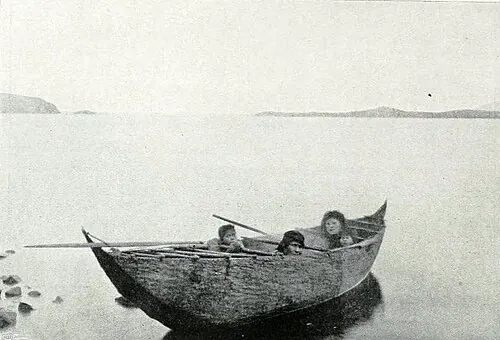

Pueblos canoeros y cazadores del extremo sur

El extremo sur del continente fue habitado desde hace más de diez mil años. En la Cueva Fell, en la actual región de Magallanes, se encontraron rastros de cazadores que, hacia el 9.000 a.C., comían milodones, caballos americanos y guanacos, parte de una fauna que luego se extinguió. Otros sitios, como la Cueva del Milodón y Pali Aike, muestran que esas estepas frías fueron recorridas una y otra vez por grupos de cazadores durante milenios.
Con el tiempo se consolidaron dos grandes modos de vida. Los cazadores terrestres recorrían a pie amplios territorios. Los aónikenk, en las estepas de la Patagonia oriental, cazaban guanacos y ñandúes; el caballo, que adoptaron a fines del siglo XVII, cambió su movilidad. Los selk'nam, en la Isla Grande de Tierra del Fuego, vivían del guanaco y tenían una vida ritual muy rica: el Hain era una ceremonia de iniciación de los jóvenes, organizada como una sociedad secreta de la que se excluía a las mujeres.
El otro modo de vida fue el de los canoeros. Según el Museo Chileno de Arte Precolombino, las primeras evidencias de esta adaptación al mar aparecen hace unos 6.000 años. Su origen se discute: una hipótesis propone que llegaron navegando desde Chiloé; otra, que cazadores terrestres se adaptaron a la costa donde la estepa toca los canales. De esa tradición surgieron pueblos distintos: los chonos, entre Chiloé y la península de Taitao; los kawésqar, entre el golfo de Penas y el estrecho de Magallanes; y los yaganes o yámana, en torno al canal Beagle. Navegaban en canoas de corteza cosida, con un fuego protegido en el centro, cazaban lobos marinos, nutrias y aves, y comían mariscos a diario. Las mujeres tenían un papel central: remaban y eran las únicas que buceaban para recolectar mariscos.
Los nombres con que se conoce a estos pueblos también tienen historia. «Ona», «alacalufe» o «patagón» son nombres dados por otros pueblos o por los europeos, y hoy se prefieren los que usan sus descendientes. Los primeros contactos con navegantes europeos, desde 1520, fueron esporádicos durante siglos. Desde fines del siglo XIX, la ganadería ovina, la búsqueda de oro, las misiones y las epidemias transformaron por completo su vida; esa historia, que incluye el genocidio selk'nam, se cuenta en Ocupación de Tierra del Fuego y genocidio selk'nam.
Versión para niños
En el extremo sur de Chile hace frío, sopla un viento fuerte y hay cientos de canales e islas. Hace miles de años llegaron pueblos que aprendieron a vivir allí. Los kawésqar y los yaganes viajaban en canoas de corteza. Llevaban un fuego encendido dentro de la canoa. Las mujeres remaban y se sumergían en el mar frío para sacar mariscos, y los hombres cazaban lobos marinos. Más al norte, los chonos navegaban entre las islas. Los selk'nam y los aónikenk caminaban por las pampas de la Patagonia cazando guanacos.
Para maestros
Nivel sugerido: 2° básico
Objetivo: Reconocer cómo los pueblos australes se adaptaron a un ambiente frío, lluvioso y lleno de canales, y distinguir el modo de vida canoero del de los cazadores de guanacos. La fecha lleva "c." porque es aproximada: las primeras huellas de cazadores en el extremo sur tienen más de diez mil años, y la vida canoera aparece hace unos 6.000.
Preguntas para la clase:
- ¿Qué necesitaban los pueblos canoeros para vivir en los canales?
- ¿Qué tareas hacían las mujeres en la canoa? ¿Por qué eran tan importantes?
- ¿En qué se diferenciaba la vida de un pueblo canoero de la de un pueblo cazador de guanacos?
Actividad (20–30 min): Con el texto de esta nota y el mapa del sitio, los estudiantes hacen una tabla de dos columnas («canoeros» y «cazadores de a pie») con el lugar donde vivía cada pueblo, qué comía y cómo se movía. Luego observan la imagen de la familia yagán y describen tres cosas que ven en la canoa. Para cursos mayores, se puede continuar con Ocupación de Tierra del Fuego y genocidio selk'nam.
Fuentes sugeridas: Museo Chileno de Arte Precolombino; Memoria Chilena.
Objetivos de Aprendizaje (Currículum Nacional)
- 2° básico · HI02 OA 01 Describir los modos de vida de algunos pueblos originarios de Chile en el periodo precolombino, incluyendo ubicación geográfica, medio natural en que habitaban
- 2° básico · HI02 OA 11 Relacionar las principales características geográficas (disponibilidad de agua, temperatura y vegetación) de las zonas habitadas por algunos pueblos originarios de Chile
- 1° medio · HI1M OA 24 Evaluar … las relaciones de conflicto y convivencia con los pueblos indígenas (aymara, colla, rapa nui, mapuche, quechua, atacameño, kawéskar, yagán, diaguita)
Fuentes
- Museo Chileno de Arte Precolombino — Cazadores marítimos o canoeros: historia
- Museo Chileno de Arte Precolombino — Yámana: economía
- Museo Chileno de Arte Precolombino — Kawésqar: economía
- Museo Chileno de Arte Precolombino — Selk'nam: culto y funebria
- Memoria Chilena — Pueblos australes de Chile
- Memoria Chilena — Rutas de poblamiento y primeras adaptaciones humanas en Chile
Revisión humana pendiente. Cómo se revisa · Reportar un error
Cómo citar: Historia de Chile. (2026). Pueblos canoeros y cazadores del extremo sur. En Historia de Chile: atlas y línea de tiempo. https://moises-salgado.github.io/historia-de-chile/momento/pueblos-canoeros-y-cazadores-del-extremo-sur.html